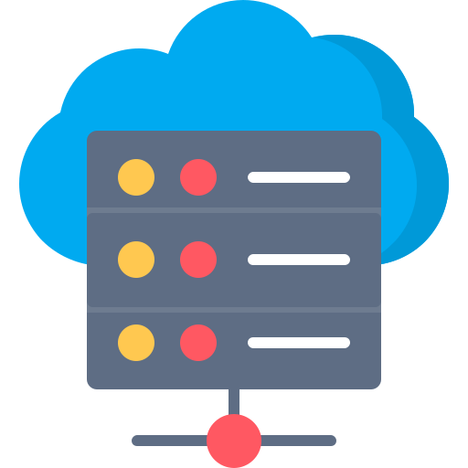
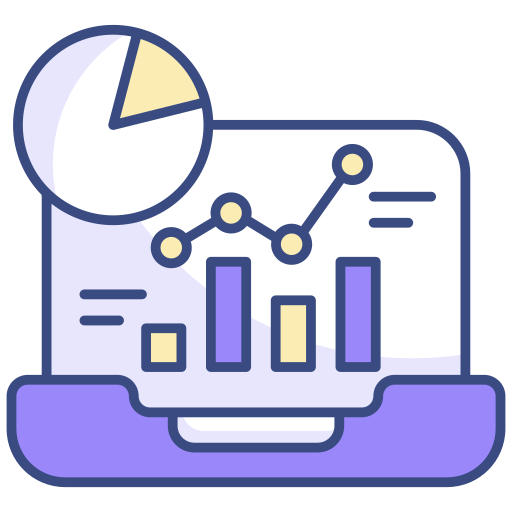

About Me
I am A. N. M. Nahid Hasan, a prospective PhD student seeking opportunities to work in cutting-edge research areas, including Artificial Intelligence (AI), Deep Learning, Machine Learning (ML), Natural Language Processing (NLP), Large Language Models (LLMs), and Internet of Things (IoT). I graduated from the American International University-Bangladesh (AIUB) with a degree in Electrical and Electronic Engineering (EEE) in August 2016. Since then, I have accumulated over 8 years of professional experience, contributing to diverse fields such as energy management, project leadership, and technology integration. I am highly motivated to bring my industry experience and technical expertise to academia by contributing to innovative research and advancing knowledge in AI and related domains.
Research Interests
- Computer Vision
- Machine Learning & Deep Learning
- Cyber Security & Information Security
-
 Data Mining & Business Intelligence
Data Mining & Business Intelligence -  Network Infrastructure
 Natural Language Processing & LLM
Natural Language Processing & LLM- Cyber Physical System & IoT
 Research Experience
Signal Analysis and Pattern Recognition of Cardio-vascular Arrhythmia from ECG using Artificial Neural Network
Conducted in-depth analysis of ECG signals to identify patterns associated with cardiovascular arrhythmia. Developed and implemented an Artificial Neural Network (ANN) model for accurate classification and prediction of arrhythmia types. The research involved data preprocessing, feature extraction, and model optimization.
Project Experience
Worked as Team Lead in Paperless Banking Activities of Jamuna Bank
Implementation of an AI-based attendance system and HRIS system across more than 170 branches, serving over 5,000 employees to streamline attendance management.
Implementation of AI Based attendance system and HRIS system with 22 modules and over 1,700 features HRIS Solutions
Implementation of Jamuna Bank's new website.
Implemention new MFS (Shadhin) and Core Banking software with data migration, UAT and security.
Lead the team to get LEED’s Platinum Certification in Unifill Group
Technical Expertise
AI/ML & Computer Vision
- Computer Vision
- Deep Learning
- TensorFlow
- Keras
- PyTorch
- OpenCV
- Explainable AI
- Machine Learning
- Image Processing
Development
- Python
- C++
- C#
- Unity 3D
- SQL
- R
- Java
- .NET
Data Science
- NumPy
- Pandas
- SciPy
- Tableau
- Power BI
- SPSS
- Excel (VBA)
- MATLAB
Engineering & Security
- MATLAB
- AutoCAD
- ETABS
- LabVIEW
- Qiskit
- CCNA
- Kali Linux
- Wireshark
- Nmap
NLP & Tools
- SpaCy
- NLTK
- Transformers
- BERT
- GPT
- Visual Studio
- Anaconda
- Eclipse
- Adobe Creative Suite
Teaching Experience
Part-time Guest Lecturer
Uttarbango Engineering Institute | 2019–2022
- Subjects: Programming (C, C++), Digital Logic Design, Digital Electronics
- Impact: Taught over 100 students during a two-year tenure.
Teaching Assistant (TA)
American International University-Bangladesh | 2014-2015
- Subjects: Digital Logic Design, Analog Electronics
- Assisted with quizzes, exams, and grading.
- Conducted lab sessions and supported faculty.
School and Coaching Experience
Evergreen International School | 2013-2017
- Subjects: Mathematics, Physics, ICT, and Computer Science (10th–12th grades)
University Admission Coaching | 2013-2017
- Subjects: Mathematics and Physics for university entrance exam preparation
Trainer for SPSB (Society for the Popularization of Science, Bangladesh)
- Focus: Mathematics, Science, and Technology training for school students
- Responsibilities:
- Prepared students for national and international science congresses.
- Taught research methodology, ICT basics, programming, and advanced concepts in mathematics and physics.
Professional Development
Taken workshops and courses on
- Advanced Microsoft Excel
- Power BI
- Arduino
- Python for Data Analytics
- Leadership Development
- Cybersecurity Awareness
Professional Experience
Digital Transformation Manager
Jamuna Bank PLC | 2019-Present
- Designing and developing HRIS solutions to streamline HR operations and enhance employee experiences.
- Implementing new HRIS systems, including data migration, UAT, training, and ensuring data security to protect sensitive employee information.
- Extracting and analyzing data from HR systems and databases to identify trends, provide insights, and support data-driven decision-making.
- Creating reports and dashboards (using Power BI, Excel, Tableau) to track HR metrics and key performance indicators.
- Experience in designing and building real-time data pipelines, ETL pipelines, and strong relational database experience with solid PL/SQL concepts and SQL skills.
- Expert in data analysis with Python (Numpy, Scipy, Scikit-learn, Pandas, etc.).
- Staying up-to-date with industry trends and participating in system upgrades and migrations to optimize HRIS functionality.
- Managing employee insurance programs and designing and implementing KPIs to track performance and measure success.
- Managing the recruitment process to attract top talent and ensure a diverse and inclusive workforce.
- Developing and delivering training and development programs to enhance employee skills and career development opportunities.
- Leading teams and delivering results in fast-paced environments while ensuring compliance with legal and regulatory requirements.
Electrical Engineer
Unifill Group | Apr 2018 – Aug 2019
- Develop and implement sustainable strategies for buildings and facilities to enhance energy efficiency and environmental responsibility, while ensuring compliance with LEED standards.
- Conduct site visits to monitor LEED projects, collaborate with internal teams, architects, engineers, and contractors to integrate sustainable principles into design and construction processes, and prepare documentation for LEED certification.
- Lead a maintenance and utility team to maintain mechanical and electro-mechanical appliances in the factory/plant, including installation, commissioning, and maintenance of various types of machines and substations.
- Develop effective plans and procedures for maintenance and utility-related support in the required arenas.
- Maintain all factory equipment and machinery in good working condition for optimum production.
- Ensure availability of spares for breakdown and preventive maintenance, and identify measures to improve machinery efficiency.
- Provide utility and maintenance-related support to the compliance team, and impart effective safety training to subordinates.
- Maintain electrical and fire safety equipment properly.
- Stay informed on emerging sustainability practices and incorporate them into the maintenance and utility team's strategies and plans.
- Continuously evaluate and improve the factory's energy efficiency and sustainability practices to reduce its environmental impact.
Assistant Engineer
Reverie Power & Automation Engineering Ltd. | Oct 2016 –Mar 2018
- Planned and designed 11kV and 33kV substations, with over 100 substations completed.
- Conducted cost estimation, offer submissions, and coordinated with the sales team while performing market research.
- Created 2D and 3D switchgear designs using AutoCAD, SolidWorks, and 3ds Max.
Education
B.Sc. in Electrical and Electronics Engineering
American International University-Bangladesh | 2013-2017
CGPA: 3.36/4.00
Test Scores
IELTS
Overall: 7GRE
Overall: 310Certifications
CO-CURRICULAR ACTIVITIES
Contact
nahidhasangb@gmail.com
+8801744905993
Dhaka, Bangladesh